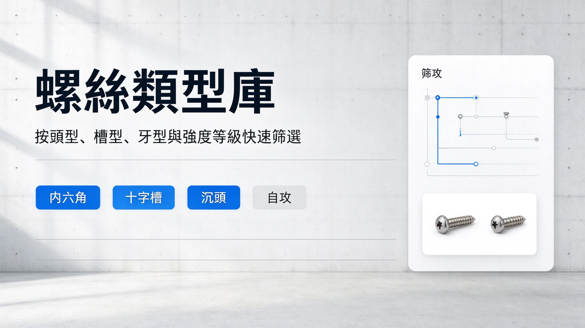
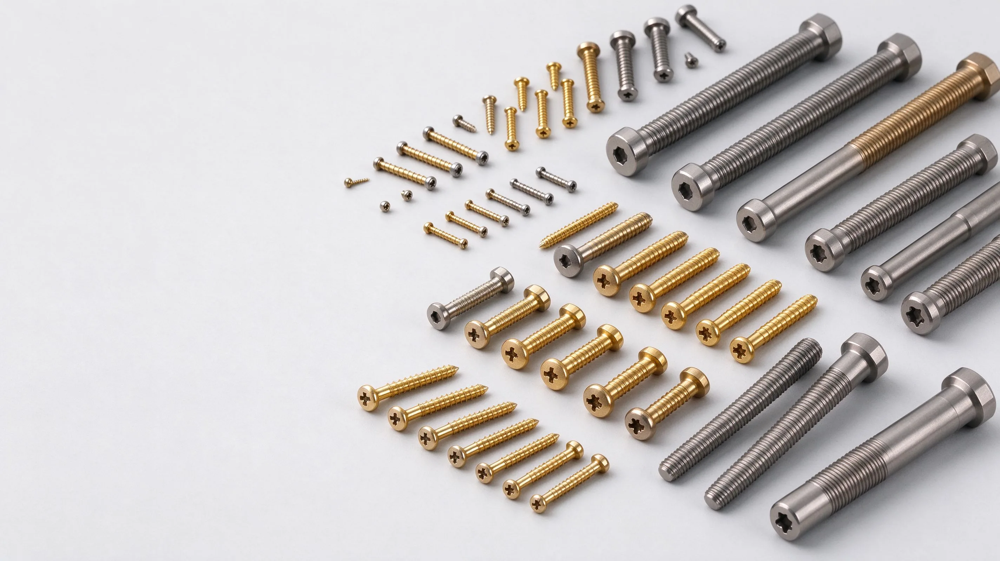
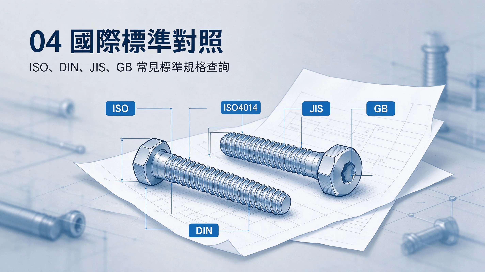
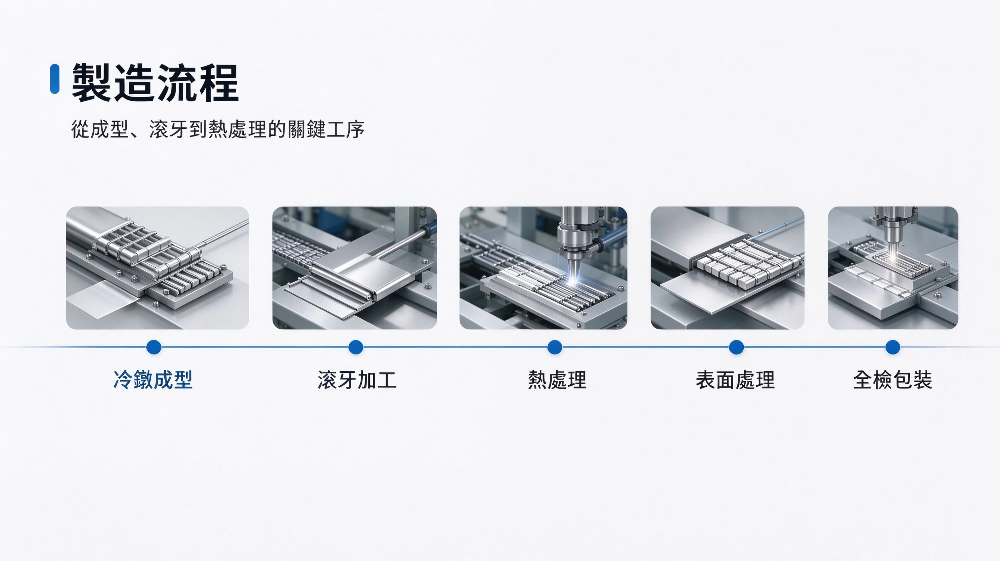
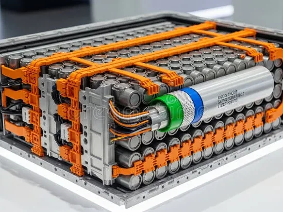
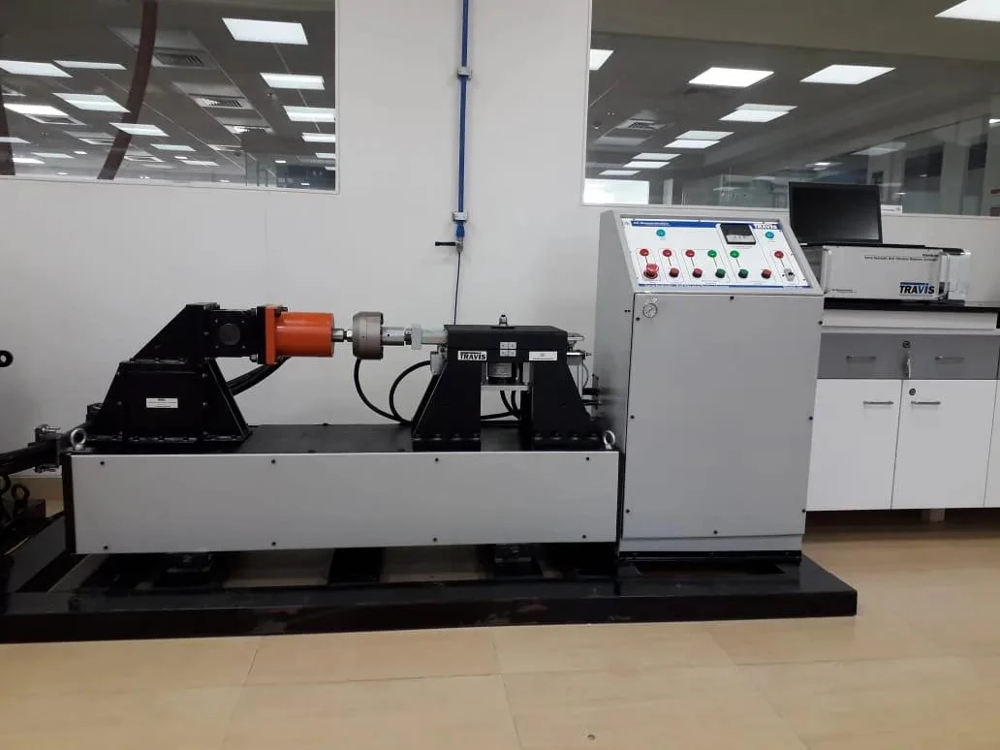
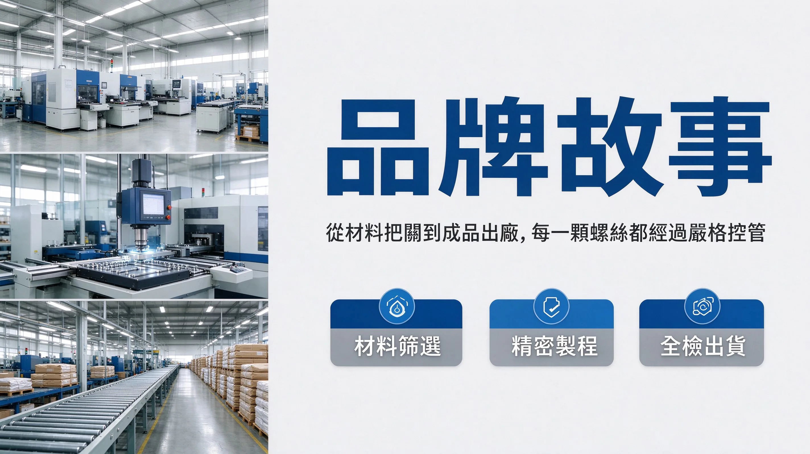

百科目錄
系統分類總覽

螺絲類型庫
🔩 頭型 / 槽型 / 牙型
盤頭、沉頭、六角頭、杯頭；十字、內六角、梅花 Torx；公制 M、自攻牙、UNC/UNF。

材質與表面
⚙️ 不鏽鋼 / 碳鋼 / 鈦合金
SUS304/316、合金鋼 10.9/12.9、鈦 Gr.5；藍白鋅、達克羅、陽極硬化。

標準規範
📏 ISO / DIN / ANSI / JIS / GB
國際與各國標準對照：ISO 4014、DIN 912、ASME B18.2.1、JIS B1111、GB/T 70。

製造工藝
🏭 冷鐓 / 滾牙 / 熱處理
螺絲成型、螺紋加工、淬火回火、滲碳、電鍍與達克羅塗層全製程。

應用領域
🌍 電子 / 汽車 / 航太 / 醫療
PCB 微型螺絲、EV 電池模組、引擎 12.9 螺栓、骨釘鈦合金、預力地錨。

檢測品管
🧪 抗拉 / 扭力 / 鹽霧 / 失效
ISO 898-1 機械性質、ASTM B117 鹽霧、Junker 震動、斷口 SEM 分析。

產業百科
📚 術語 / 品牌 / 趨勢
強度等級識讀、摩擦係數 CoF、Würth/Hilti 品牌、智慧感測螺栓。